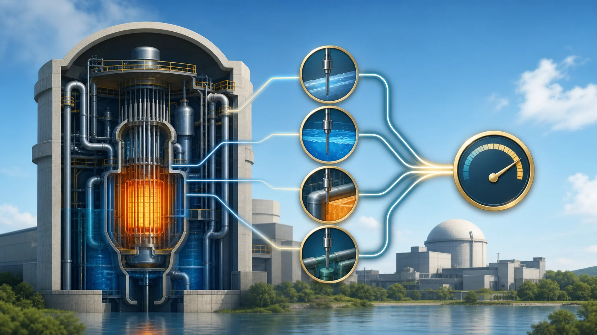
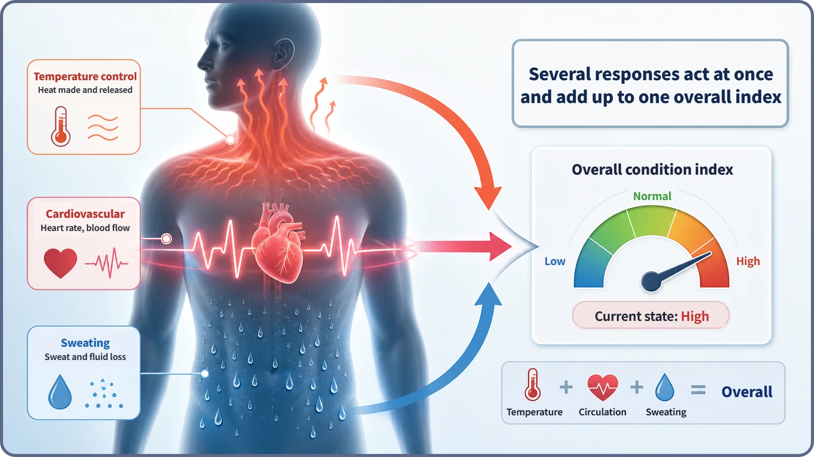
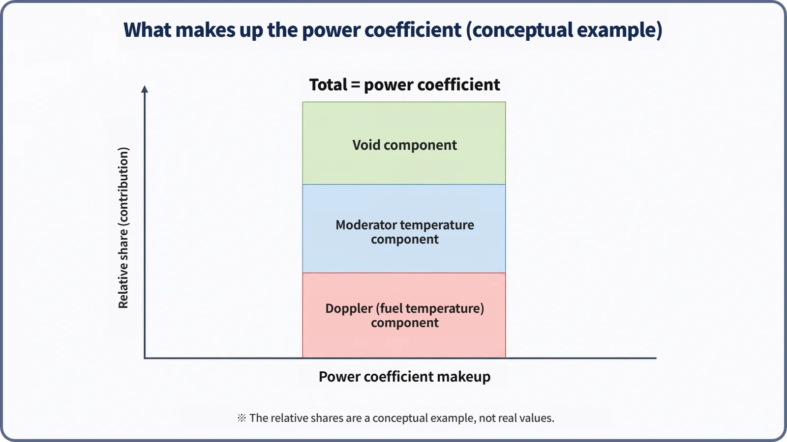

Reactor Kinetics & Reactivity · 122
How You Feel Is a Sum, Not a Single Reading — The Power Coefficient and the Fuel Temperature Coefficient
When power rises, every feedback path answers at once. The power coefficient is their sum, and the fuel temperature coefficient is the slice that answers first.

When reactor power changes, Doppler (fuel temperature), moderator temperature and void feedback all act at the same time. The power coefficient, αP = dρ/dP, is their sum. The fuel temperature coefficient, essentially the Doppler coefficient, is one slice of that sum, and because its path is the shortest it often shows up first.
Every feedback path answers at once
A reactor has several separate feedback paths. Doppler feedback reacts instantly inside the fuel pellets; moderator temperature feedback moves only once heat reaches the water (the coolant); the void effect appears when that water boils into bubbles. When reactor power actually rises, these paths do not take turns. They all act at the same time. So to know how much reactivity really changes when power goes up, you have to add up every path's share. That sum is the power coefficient.
On a bad day, your body never responds in just one way
Think of a day when you are coming down with something. Your temperature rises, your heart beats faster, and a cold sweat forms on your forehead. Each is a different body system: temperature control widens blood vessels to shed heat, the heart speeds up to move more blood, and sweat glands cool you by evaporation. Yet when a doctor asks how you feel, you do not recite each reading. You say, "Overall, I feel awful." That one word "overall" contains several responses happening at once and stacking up.

A reactor works the same way. When power rises, the fuel gets hotter (the Doppler path), heat flows out and the coolant gets hotter (the moderator temperature path), and in some cases the coolant boils locally and voids increase (the void path). Each affects reactivity in its own way, and the sum of all three shares is the power coefficient of reactivity.
The power coefficient in one sentence
The power coefficient (αP) is a single number for the entire reactivity (ρ) change that actually results when reactor power (P) changes by one unit:
αP = dρ/dP
It is "the whole result produced by one cause, power." The Doppler coefficient, the moderator temperature coefficient and the void coefficient are each a reactivity sensitivity to a single quantity: fuel temperature, moderator temperature or void fraction. The power coefficient sums those sensitivities as they act together during one event, a change in power.
How the pieces add up
Written out, the power coefficient looks roughly like this:
αP = (dρ/dTf)×(dTf/dP) + (dρ/dTm)×(dTm/dP) + (dρ/dαv)×(dαv/dP) + ⋯
In each term, the first factor is "how much reactivity changes when one quantity changes" (the Doppler, moderator temperature and void coefficients). The second is "how much that quantity actually follows when power changes," which depends on the paths and speed of heat transfer. Multiply the two for each path, add them up, and you have the power coefficient. In body terms: work out "how sensitive this response is × how strongly today's stress drives it" for temperature, heartbeat and sweating, then add. The real values and weights vary with reactor type, fuel-cycle stage and power level, so here we look only at the structure of the sum.
| Path | Reactivity sensitivity | How strongly power drives it |
|---|---|---|
| Doppler (fuel temperature) | dρ/dTf (fuel temperature coefficient) | dTf/dP |
| Moderator temperature | dρ/dTm (moderator temperature coefficient) | dTm/dP |
| Void | dρ/dαv (void coefficient) | dαv/dP |

Where does the fuel temperature coefficient sit?
The fuel temperature coefficient is essentially the coefficient often called the Doppler coefficient. In the formula it is the dρ/dTf term, the reactivity sensitivity to fuel temperature alone: one slice of the power coefficient, not the whole thing.
It is a special slice, though. The Doppler path is the fastest: it responds right inside the fuel pellet, with no need for heat to cross into another material. So in the first moments of a rapid power change, this component often shows up earlier and more prominently than the others, like your heart thumping first when you are startled, before the sweat or the temperature rise. That is a qualitative description; each component's actual share varies with reactor type and operating conditions, so no percentages are given.
The moderator temperature and void coefficients are the other slices, the dρ/dTm and dρ/dαv terms. When each becomes larger or smaller is beyond the scope of this explainer.
The sign and size are also the result of a sum
The power coefficient's sign and size are not designed on their own; they come from the components' signs and sizes combined with how strongly each responds to power. The components tend to be designed negative under normal operating conditions, and when they mostly push in the negative direction together, the power coefficient is also normally designed to be negative. It then shows self-stabilizing behavior for the whole core: when power rises, the reactor lowers its own reactivity and holds the rise back. This is a general design tendency, not a law for every reactor type and condition; regulatory acceptance criteria differ by reactor type and regulator.
If one component is less negative, or can approach positive under some conditions (for example, the moderator temperature coefficient early in core life), the total's size and margin shrink accordingly. So designers check each component and also that the total stays within the required range over the whole operating span.
Telling it apart from its neighbors
Individual coefficients vs. the power coefficient. An individual coefficient is the sensitivity to one quantity; the power coefficient is the total change when power alters several quantities at once.
The isothermal temperature coefficient. It assumes the whole reactor, fuel and moderator alike, changes uniformly to the same temperature, and is mainly measured in zero-power physics tests. The power coefficient reflects real power operation, where fuel and moderator temperatures change at different rates according to actual heat transfer. Their exact numerical relationship depends on reactor type and measurement procedure.
"Know the power coefficient and you can skip the components." No. In core design and safety analysis it still matters how much came from Doppler and how much from moderator temperature; the sum alone cannot tell you which path dominates in a given accident scenario.
"All-negative components mean a strongly negative total." An oversimplification. Each component has a different weight, so the total's size depends on both sizes and weights.
Why it matters
For safety, keeping the power coefficient negative (or within a specified range) under normal conditions is one of the key indicators of whole-core inherent safety, and the summed coefficient (or its breakdown) is a major input when transients such as reactivity insertion accidents are analyzed. In operation, during load following or power changes, operators and control systems allow for this combined reactivity change when adjusting control rods and boron concentration. In design, fuel placement and absorber use are planned across the fuel cycle so that both the components and their sum stay within range.
Key takeaways
- The power coefficient (αP = dρ/dP) is the total reactivity change when Doppler, moderator temperature, void and other feedback paths act together as power changes, like an "overall condition" built from several body responses.
- By the chain rule, it is the sum over paths of each quantity's reactivity sensitivity times that quantity's sensitivity to power.
- The fuel temperature (Doppler) coefficient is one slice; with the shortest path, it often stands out in the first moments.
- When the components are mostly negative, the total is normally designed to be negative.
- The total alone is not enough: which component produced it still matters in design and safety analysis.